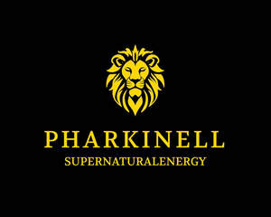

Trade Mark Journal No.2025/038 19 September 2025
UK00004250214 15 August 2025 (32)

- Class 32
- Non alcoholic aperitifs; Non-alcoholic drinks; Non-alcoholic malt drinks; Carbonated non-alcoholic drinks; Non-alcoholic beer flavored beverages; Non-alcoholic beverages flavoured with coffee; Non-alcoholic fruit drinks; Non-alcoholic beverages; Beverages (Non-alcoholic -); Isotonic non-alcoholic drinks; Non-alcoholic carbonated beverages; Non-alcoholic malt beverages; Non-alcoholic soda beverages flavoured with tea; Non-alcoholic beverages flavored with coffee; Non-alcoholic beverages flavoured with tea; Non-alcoholic malt free beverages [other than for medical use]; Non-alcoholic flavored carbonated beverages; Non-alcoholic beverages flavored with tea; Non-alcoholic beer; Sarsaparilla [non-alcoholic beverage]; Alcohol free beverages; Cordials (non-alcoholic beverages); Non-alcoholic wine; Non-alcoholic vegetable juice drinks; Fruit beverages (non-alcoholic); Kvass [non-alcoholic beverages]; Kvass [non-alcoholic beverage]; Root beers, non-alcoholic beverages; Low alcohol beer; Cola drinks; Non-alcoholic honey-based beverages; Honey-based beverages (Non-alcoholic -); Non-alcoholic grape juice beverages; Aloe vera drinks, non-alcoholic; Non-alcoholic beverages with tea flavor; Fruit juice beverages (Non-alcoholic -); Non-alcoholic fruit juice beverages; Extracts for making non-alcoholic beverages; Non-alcoholic sparkling fruit juice drinks; Non-alcoholic beers; Alcohol free wine; Cider, non-alcoholic; Vitamin fortified non-alcoholic beverages; Cocktails, non-alcoholic; Non-alcoholic cocktails; Non-alcoholic dried fruit beverages; Alcohol free cider; Non-alcoholic fruit cocktails; Non-alcoholic syrups for making beverages; Syrups for making non-alcoholic beverages; Fruit-based soft drinks flavored with tea; Cordials [non-alcoholic]; Non-alcoholic cordials; Fruit flavoured carbonated drinks; Smoothies [non-alcoholic fruit beverages]; Alcohol free aperitifs; Soft drinks flavored with tea; Non-alcoholic wines; Flavoured carbonated beverages; Non-alcoholic beverages containing fruit juices; Non-alcoholic beverages containing vegetable juices; Squashes [non-alcoholic beverages]; Non-alcoholic beer-based cocktails; Fruit flavored drinks; Fruit flavored soft drinks; Carbonated soft drinks; Fruit flavoured drinks; Aperitifs, non-alcoholic; Non-carbonated soft drinks; Colas [soft drinks]; Beer-based beverages; Coffee-flavored soft drinks; Vegetable drinks; Fruit-flavored soft drinks.
Mr Stephen Akel